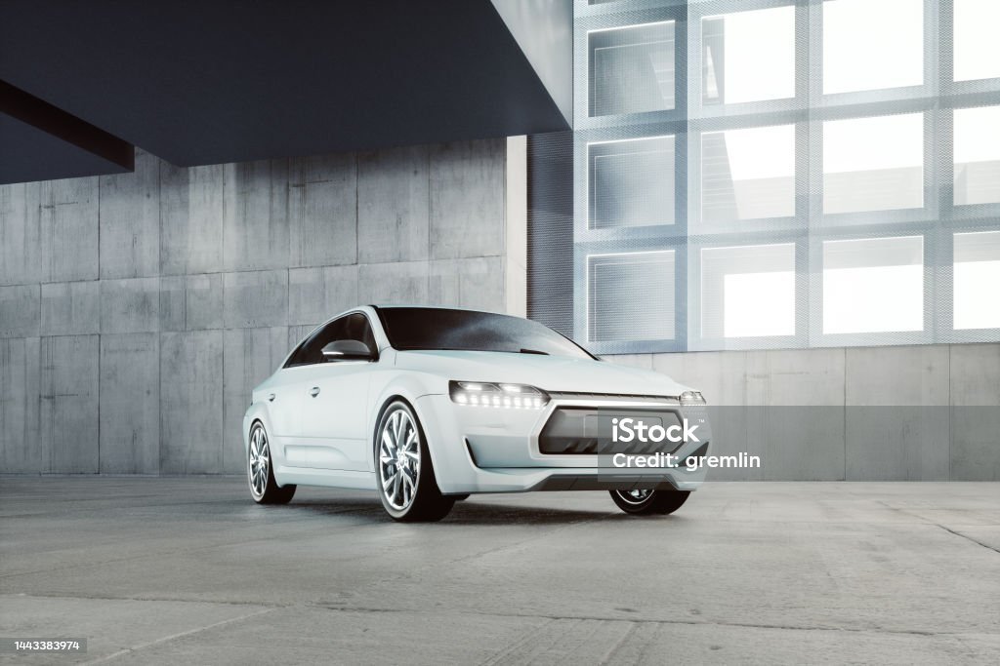

73 Tord Gustang
The Tord Gustang of 1973 embodies a time of daring styling and exciting driving. This Gustang's unique body shape, which includes bold front grille, sleek lines, and that signatureMustang appeal, perfectly embodies the spirit of the '70s. As we examine the specifics, you'll see why this vintage vehicle is unique in the annals of auto history.
Design and Features:
The '73 Gustang boasts a sleek and sporty design, epitomizing the stylish aesthetics of the disco era. With its iconic fastback silhouette, this Gustang exudes a sense of speed and excitement. The quad headlamps and chrome accents add a touch of sophistication, making it a true head-turner on the streets. brBNW
With its extremely elegant appearance and turbocharged power, the BNW 8 Series is a car that may be compared to a superhero. The 8 Series is a contemporary classic that draws attention wherever it goes. It first burst onto the scene in the 1990s and made a reappearance in 2018. Now let's explore the fascinating details that really put this car on display.
Design and Features:
Envision a vehicle as stylish as a superhero outfit. The BNW 8 Series is that! It resembles a rocket on wheels with its sporty, low design. Its front grille gives it the appearance of a superhero mask, and the interior is like entering a starship from the future. It's not just really stylish; the interior is incredibly cosy as well!Tezla

With its all-electric drivetrain, the Tezla is unlike any other automobile on the road; it resembles a street superhero. The brilliant minds of Tezla Motors, who are trying to make the world a greener and more exciting place, created this amazing ride. Let's explore the incredible features that elevate the Tezla to the status of green powerhouse!